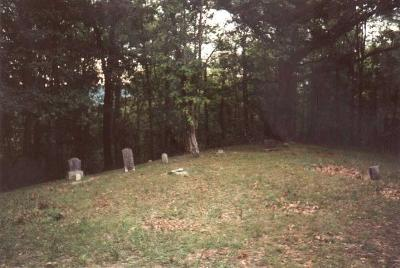
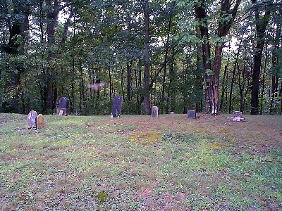

Just outside of the ghost town of Moonville is the Moonville Cemetery. Many of Moonville's founding fathers are buried there, including members of the Coe family, who once owned much of the Zaleski forest in rural Vinton County, where Moonville and its haunted railroad tunnel are located. For the complete story on Moonville, click here.

If Moonville is haunted, there's a good chance its cemetery is haunted as well. A few of the graves have new stones, but many haven't been replaced in a hundred years or more, and there are probably unmarked graves here as well. The man or men who haunt Moonville may be buried here. In fact, this photo was taken in the cemetery by a guy who runs a pretty cool Moonville site. See the ghostly smudge above the grave?

The cemetery is almost as creepy as the tunnel itself. Drive past the Moonville railpath and up the steep driveway to the left and you'll find the cemetery; it's well worth a visit.
Back
forgottenohio@yahoo.com